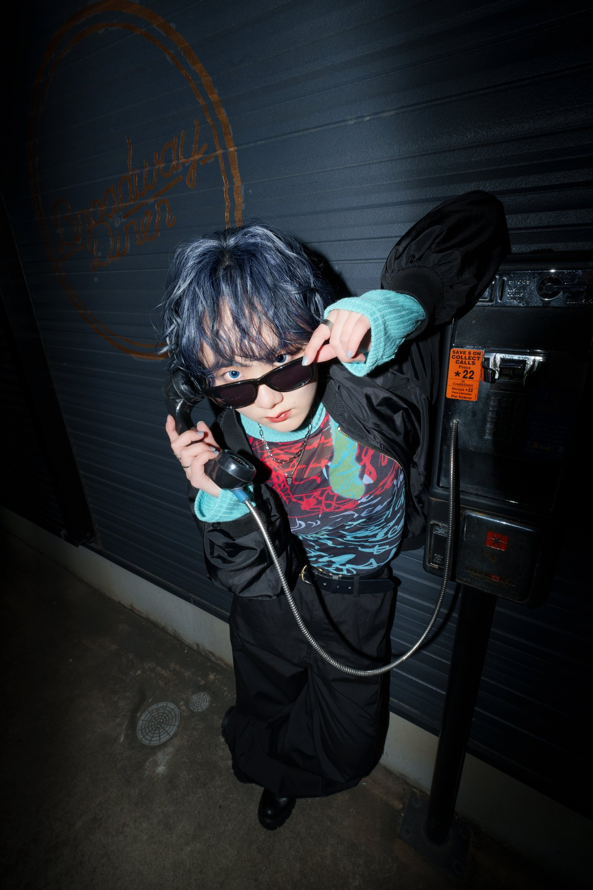
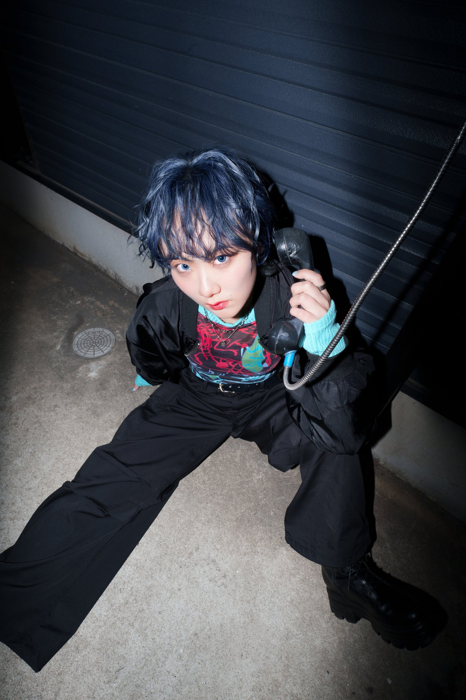

Artist Photo
ダンスグループ「Hi, Me:)」メンバーのアーティスト写真シリーズ。 各メンバーの個性と表現力を引き出すため、 自然光とスタジオライトを組み合わせた撮影を実施。 Canon R5とGMレンズの組み合わせで、 繊細な表情と質感を高解像度で捉えました。

自然光を活かしたポートレート

スタジオセットアップ
ドラマティックライティング
このプロジェクトでは、各メンバーの個性を最大限に引き出すことを目標としました。 事前にメンバーと打ち合わせを行い、 それぞれが表現したいイメージやムードを共有。 撮影当日は、リラックスした雰囲気の中で自然な表情を引き出すことに注力しました。
ライティングは、柔らかい自然光をベースに、 必要に応じてリフレクターやストロボで補正。 レタッチでは、肌の質感を保ちながら、 色調を統一し、シリーズとしての一体感を演出しています。